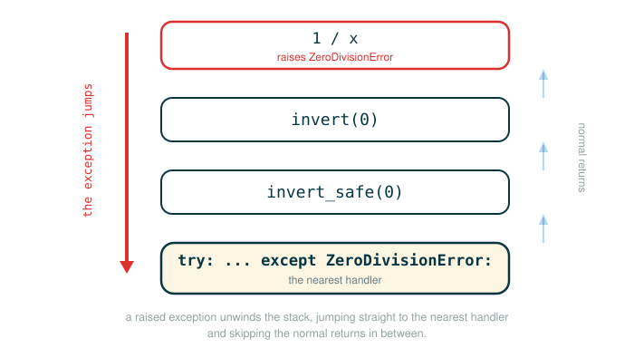

3.3 Exceptions and Exception Objects
Programs do not always move in a straight line from input to output. Sometimes something goes wrong: a function is called with an invalid or wrong argument, a resource or file the program needs is missing, a network connection fails, or a calculation wanders into a value that an operation cannot handle. Composing Programs 3.3 opens by naming exactly these situations, because they are the reason exceptions exist. An exception is Python's structured mechanism for reacting when a program encounters such an error, instead of silently producing a wrong result or blindly continuing.
By the end of this lesson you will be able to do five things. You will be able to explain what happens inside Python when an error is detected, raise an exception on purpose with the raise statement, check an assumption with assert, protect a piece of code with a try statement and respond to a specific failure with except, and treat an exception as an object that can carry useful information of its own.
The single idea underneath all of this is control flow. A program normally runs one statement after another in order. An exception interrupts that order. Learning exceptions means learning to read code where the next line that runs is not the next line on the page.
The Fire Alarm Model
Imagine a school hallway. Most of the time, students follow the normal path:
class -> hallway -> next classA fire alarm changes that. Students do not keep walking to the next class. They stop the ordinary routine and switch to the emergency procedure, and someone trained for that situation decides what happens next.
An exception is like that alarm. Raising an exception is a way of interrupting the normal flow of execution to signal that some unusual circumstance has arisen. It stops the ordinary path and gives another part of the program a chance to respond.
A key point from the original text is that not every program should respond the same way to the same alarm:
- A web server should usually keep running, log the problem, and continue serving other users.
- An interactive interpreter session may print an error message and wait for the next command.
- A small script may simply stop so the programmer can find and fix the bug.
So exceptions are not only about errors. They are a mechanism for making a deliberate choice when an unusual condition occurs. The program decides whether to recover, retry, report, or quit.
What Happens When Python Detects an Error
Python raises exceptions automatically for many errors. You do not have to ask for this; it is built into how the interpreter evaluates code.
For example, dividing by zero is not a valid arithmetic operation, so Python stops and reports the problem:
>>> 1 / 0
Traceback (most recent call last):
File "<stdin>", line 1, in <module>
ZeroDivisionError: division by zeroRead the last line first. It names the kind of problem Python hit: a ZeroDivisionError, with the message division by zero. The lines above it are the traceback. It is called a traceback because it traces backward through the active function calls that were in progress when the error happened, showing the path that led there.
The machine model is the important part. When an error is detected, the following happens in order:
normal evaluation begins
an error is detected
Python creates an exception object
normal evaluation stops
Python searches for a handler
if no handler is found, Python prints a tracebackNotice the third step. The error is not just a printed message. Python builds an exception object first, and only prints a traceback as a last resort when nothing in the program is prepared to handle that object.
Raising an Exception Directly
Programs do not have to wait for Python to detect a problem. They can raise an exception on purpose with the raise statement.
The original text gives this direct example at the interactive prompt:
>>> raise Exception('An error occurred')
Traceback (most recent call last):
File "<stdin>", line 1, in <module>
Exception: An error occurredThe raise statement is followed by an expression that evaluates to an exception object. Here that expression is Exception('An error occurred'), which constructs an exception object and stores the message 'An error occurred' inside it. Because no surrounding try statement catches this exception, Python prints a traceback whose final line shows the exception class, Exception, followed by the message.
Before walking through a longer example, look at the shape of a raise statement one token at a time.
# (1)
raise Exception('An error occurred')
raise Exception('An error occurred')
├─ raise ........................... the statement that interrupts normal execution
├─ Exception ....................... the exception class to construct
├─ ( ............................... begins the constructor arguments
├─ 'An error occurred' ............. the message stored inside the new exception object
├─ ) ............................... ends the constructor arguments
└─ action: stops the current path and signals this exception object to any waiting handlerA raise statement is not an expression. It does not evaluate to a value that gets printed. Its job is to perform an action: build the exception object and hand control to whatever handler is prepared to catch it. If nothing catches it, the program stops and the traceback appears.
To let this document's code run safely during checking, here is an executable version that catches the exception instead of letting it terminate the program:
# (2)
try:
raise Exception("An error occurred")
except Exception as error:
print(type(error).__name__)
print(error)
Expected output:
Exception
An error occurredHere type(error) is the exception's class, and .__name__ is that class's name as a string — which is why the first printed line is the bare word Exception. That same pattern reappears later whenever the handler prints a caught exception's class name.
The next section explains the try and except punctuation that makes this safe version work.
The Anatomy of Try and Except
A try statement protects a block of code that might raise an exception, and an except clause describes how to respond if a matching exception is raised. The punctuation carries the meaning, so read it carefully.
Start with the smallest useful pattern: a function that returns a reciprocal, but answers with a word instead of crashing when the input is zero.
# (3)
def safe_reciprocal(x):
try:
return 1 / x
except ZeroDivisionError:
return "undefined"
print(safe_reciprocal(4))
print(safe_reciprocal(0))
Expected output:
0.25
undefinedWalk the header of the except clause one token at a time.
# (4)
except ZeroDivisionError:
except ZeroDivisionError:
├─ except .............. begins a handler attached to the preceding try block
├─ ZeroDivisionError ... the exception class this handler is willing to catch
├─ : ................... starts the indented body that runs only on a matching exception
└─ action: if the try block raises ZeroDivisionError, run this handler instead of crashingHere is how safe_reciprocal behaves. If x is 4, the line return 1 / x succeeds and produces 0.25, so the except clause never runs. If x is 0, the expression 1 / x raises ZeroDivisionError, Python abandons the rest of the try block, finds this matching handler, and returns "undefined".
The original text shows the same idea directly at the interactive prompt, and it adds one more feature: naming the caught exception object.
>>> try:
x = 1/0
except ZeroDivisionError as e:
print('handling a', type(e))
x = 0
handling a <class 'ZeroDivisionError'>
>>> x
0This transcript contains two pieces of machine behavior worth slowing down on.
First, 1/0 is attempted before x is ever bound to a useful number. The division fails immediately, so Python creates a ZeroDivisionError object and looks for a matching handler before any assignment to x from that line can happen.
Second, the clause except ZeroDivisionError as e: does two jobs at once. The as e part is new compared to the simpler form above. Read it token by token.
# (5)
except ZeroDivisionError as e:
except ZeroDivisionError as e:
├─ except .............. begins a handler attached to the preceding try block
├─ ZeroDivisionError ... the exception class this handler is willing to catch
├─ as .................. binds the caught exception object to a name
├─ e ................... the name that now refers to the caught exception object
├─ : ................... starts the indented handler body
└─ action: catch a matching exception and make the exception object available as eInside the handler, print('handling a', type(e)) reports the class of the caught object, which is why the session prints handling a <class 'ZeroDivisionError'>. Then x = 0 runs. After the whole try statement finishes, the global name x is bound to 0, which is why asking for x afterward shows 0.
Skipping the Rest of a Failing Block
The next official example makes the jump in control flow more visible by including a print line that never runs when the input is zero.
# (6)
def invert(x):
result = 1/x # Raises a ZeroDivisionError if x is 0
print('Never printed if x is 0')
return result
def invert_safe(x):
try:
return invert(x)
except ZeroDivisionError as e:
return str(e)
print(invert_safe(2))
print(invert_safe(0))
Expected output:
Never printed if x is 0
0.5
division by zeroStep the block above and watch the invert_safe(0) call. Notice that the invert frame opens and 1/x raises before print('Never printed if x is 0') ever runs, and that control jumps straight to the handler in invert_safe, which returns the string division by zero.
That skipped print is the teaching moment. An exception does not merely change a return value. It interrupts the current path immediately, abandoning every remaining statement in the block where the failure occurred, all the way up to the nearest handler.
The figure below traces how the raised exception unwinds the call stack and jumps straight to the nearest enclosing try/except handler.

The original text shows the matching interactive session as well:
>>> invert_safe(0)
'division by zero'Assertions
An assertion is a statement that checks whether a condition you believe is true actually holds. It is a quick way to verify an assumption while a program runs.
The original text shows what happens when the condition is false:
>>> assert False, 'Error!'
Traceback (most recent call last):
File "<stdin>", line 1, in <module>
AssertionError: Error!An assert statement has this shape:
assert <expression>, <string>If the expression is a true value, execution simply continues and nothing visible happens. If the expression is a false value, Python raises an AssertionError whose message is the string. Walk the example one token at a time.
# (7)
assert False, 'Error!'
assert False, 'Error!'
├─ assert .... begins an assertion that checks an assumption
├─ False ..... the condition being checked; this value is false
├─ , ......... separates the condition from its failure message
├─ 'Error!' .. the message attached to the AssertionError if the condition is false
└─ action: because the condition is false, raise AssertionError with the message 'Error!'Here is a safe executable version that uses an assertion inside a function and catches the result so the program does not terminate:
# (8)
def require_positive(n):
assert n > 0, "n must be positive"
return n
for value in [3, -2]:
try:
print(require_positive(value))
except AssertionError as error:
print(type(error).__name__, error)
Expected output:
3
AssertionError n must be positiveAssertions are best for checking assumptions during development, where a failed check means a programmer made a mistake. They are not the right tool for ordinary invalid user input that you expect and can recover from; that situation calls for normal validation and a helpful message instead.
Exception Objects
An exception is not just a message printed to the screen. It is an object, and you can manipulate it like any other object in Python.
In Python, exception objects are instances of classes. The built-in exception classes inherit, directly or indirectly, from BaseException. Some exception classes you will meet often include:
Exception
AssertionError
ZeroDivisionError
TypeError
ValueErrorBecause each kind of failure has its own class, a program can respond differently to different unusual situations by attaching a separate except clause to each class. A single try statement may have several handlers, and Python uses the first one whose class matches the raised exception.
# (9)
def describe_error(action):
try:
action()
except ZeroDivisionError as error:
print("division problem:", type(error).__name__)
except TypeError as error:
print("type problem:", type(error).__name__)
describe_error(lambda: 1 / 0)
describe_error(lambda: 1 + "two")
Expected output:
division problem: ZeroDivisionError
type problem: TypeErrorPython tries the handlers in order and uses the first matching one. That is why the exception class, not just the message, is what lets a program tell one failure apart from another and choose the right response.
Custom Exception Classes
Because exceptions are objects built from classes, you can define your own exception class to carry information that the built-in classes do not. The original text builds one for an iterative improvement function.
Start with the situation, because the motivation is the subtle part. Suppose a function is repeatedly improving a guess at an answer. Partway through, a mathematical step fails and raises a built-in exception. The most useful piece of information at that moment is the last guess the process reached before it failed. A custom exception class lets the program package that guess and carry it out to wherever it can be used.
First, the class itself, in isolation:
# (10)
class IterImproveError(Exception):
def __init__(self, last_guess):
self.last_guess = last_guess
error = IterImproveError(0.25)
print(error.last_guess)
print(isinstance(error, Exception))
Expected output:
0.25
TrueWalk the class header one token at a time.
# (11)
class IterImproveError(Exception):
class IterImproveError(Exception):
├─ class ............. begins a class definition
├─ IterImproveError .. the name of the new exception class
├─ ( ................. begins the list of base classes
├─ Exception ......... the base class this new class inherits from
├─ ) ................. ends the base class list
├─ : ................. starts the indented class body
└─ action: define IterImproveError as a new exception class that is a kind of ExceptionBecause IterImproveError inherits from Exception, an instance of it is a full exception object that can be raised and caught like any other. Its __init__ method stores the value last_guess on the object as an attribute, so the exception now carries a useful value, not just a message. The check isinstance(error, Exception) is True, which confirms that an except clause written for Exception, or for IterImproveError specifically, will catch it.
Interrupting Iterative Improvement
Now put the custom exception to work inside the original iterative-improvement code. The improve function repeatedly applies an update step until a done test passes, and find_zero uses it to search for an input where a function equals zero. The helper newton_update comes from Chapter 1 and is reused here unchanged. You do not need to recall the details of newton_update from 1.6 — all that matters here is that it repeatedly nudges the guess toward an answer, and that one of those nudges can land on a negative x where sqrt(x) is undefined.
# (12)
def improve(update, done, guess=1, max_updates=1000):
k = 0
try:
while not done(guess) and k < max_updates:
guess = update(guess)
k = k + 1
return guess
except ValueError:
raise IterImproveError(guess)
def find_zero(f, guess=1):
def done(x):
return f(x) == 0
try:
return improve(newton_update(f), done, guess)
except IterImproveError as e:
return e.last_guess
Trace the control flow when find_zero is asked to find a zero of a function whose value involves a square root. The original text shows this session, after importing sqrt:
>>> from math import sqrt
>>> find_zero(lambda x: 2*x*x + sqrt(x))
-0.030211203830201594That printed value is not a true zero of the function, because sqrt(x) is not defined for negative real numbers. Newton's method steps slightly into negative territory, and at that point sqrt(x) raises a ValueError. The returned number is the last guess the process reached just before crossing into that forbidden region.
Here is what happens, step by step:
find_zero calls improve with newton_update(f), done, and guess
improve repeatedly calls update on guess
an update produces a negative x, and sqrt(x) raises ValueError
improve catches ValueError in its except clause
improve raises IterImproveError(guess), preserving the last guess
find_zero catches IterImproveError as e
find_zero returns e.last_guess, the saved last guessThe custom exception lets the lower-level improvement process report a precise message: I cannot keep going, but here is the best guess I still have. Without it, the ValueError would have propagated all the way out and the useful guess would have been lost.
Why the Handler Is Outside
This example illustrates a design principle about where to raise an exception and where to handle it. They are usually not the same place.
The improve function is where the failure is detected. It knows that a mathematical step crossed into an invalid input, but it does not know what the larger program wants to do about that. The find_zero function is where the goal lives: return a usable approximation of a zero. So find_zero is the right place to catch IterImproveError and pull out last_guess.
State the principle directly:
raise an exception where the unusual condition is detected
handle it where the program has enough context to choose a responseThis separation is what makes exceptions a communication tool rather than just an error report. A deep, low-level function can announce both that something went wrong and what useful information it still holds, and a higher-level function with more context decides how to use it.
⚠Common Beginner Traps
Trap 1: Thinking exceptions are only crashes. An unhandled exception often terminates a program, but a handled exception can be a deliberate, planned recovery. The same alarm can mean evacuate or can mean log and continue, depending on who is listening.
Trap 2: Catching every exception too broadly. Writing except Exception: everywhere can hide real bugs by swallowing failures you did not anticipate. Prefer catching the specific exception class you actually know how to handle.
Trap 3: Forgetting that a raised exception stops the current path. After an exception is raised, Python does not keep running the remaining statements in that block. Control jumps to the nearest matching handler, as the skipped print('Never printed if x is 0') line shows.
Trap 4: Treating the message as the whole exception. An exception is an object. It has a class, it may carry a message, and it may carry custom attributes such as last_guess. The class is what handlers match on, so an except clause written for the wrong class fails to catch the exception and it propagates uncaught, while custom attributes like last_guess are lost if you read only the message.
Trap 5: Using assertions for ordinary user mistakes. Assertions are for checking programmer assumptions during development. Expected invalid input from a user should be handled with normal validation and clear feedback, not with an AssertionError.
✓Check Your Understanding
- What is the difference between raising an exception and handling an exception?
- Why does Python print a traceback when no handler is found?
- What exception class does
assert False, 'Error!'raise, and why? - Using
describe_errorfrom example (9), what happens when you calldescribe_error(lambda: int('x'))? - What extra information does
IterImproveErrorstore, and how does it store it? - Why does
find_zerocatchIterImproveErrorrather than catchingValueErrordirectly inside the update step?
Show the answers
- Raising an exception creates an exception object and interrupts normal execution to signal a problem. Handling an exception catches that object in a matching
exceptclause and decides what to do next. - A traceback shows the chain of active calls that led to the unhandled exception, which helps the programmer locate where the failure happened. Python prints it only when no handler is prepared to catch the exception.
- It raises an
AssertionErrorwith the messageError!. The condition isFalse, so the assertion does not pass, and Python signals the failed assumption. - Calling
int('x')raises aValueError. Neither theZeroDivisionErrorhandler nor theTypeErrorhandler matches that class, so no handler runs. TheValueErrorpropagates out ofdescribe_erroruncaught, and with no surrounding handler Python prints a traceback ending inValueError. - It stores the last guess reached before the iterative process failed. The
__init__method saves it as the attributeself.last_guess. - The update step only knows that a mathematical operation failed; it lacks the context to choose a recovery. The
find_zerofunction knows the goal is to return a usable approximation, so it has the context needed to use the saved last guess.
§Summary
Exceptions interrupt the normal flow of a program when an unusual condition occurs. Python raises many exceptions automatically, such as ZeroDivisionError for division by zero, and a program can raise an exception on purpose with raise or check an assumption with assert. A try statement protects code that might fail, and an except clause responds to a specific exception class, optionally binding the caught object with as. Because exceptions are objects built from classes, they can carry structured information. A custom class such as IterImproveError uses that capability to communicate not only that a process failed but also the most useful value it still held, and the design principle is to raise where the problem is detected but handle where there is enough context to respond.
▶Step-Through Checkpoint
This is the lesson in miniature: one try statement, two calls, two paths. In the environment diagram built here, the second reciprocal_or_message frame is where the action shows: the ZeroDivisionError object appears on the heap, the return result line never runs, and control jumps to the except clause where error binds to that exception object and message to its class name, instead of the frame returning normally the way the first call's does. Before you step through the block below, write down three predictions: whether error and message appear in the first call's frame, which line runs after 1 / x fails in the second call, and what value the last line binds to second.
# (13)
def reciprocal_or_message(x):
try:
result = 1 / x
return result
except ZeroDivisionError as error:
message = type(error).__name__
return message
first = reciprocal_or_message(2)
second = reciprocal_or_message(0)
Step through the block one line at a time and check each prediction as the frames appear. The first call binds result to 0.5; the except clause never runs, so error and message never appear. In the second call, 1 / x raises ZeroDivisionError, return result is skipped, and the handler binds error to the exception object and message to 'ZeroDivisionError'. At the end, first is 0.5 and second is 'ZeroDivisionError'. The next line that runs after a raise is not the next line on the page.